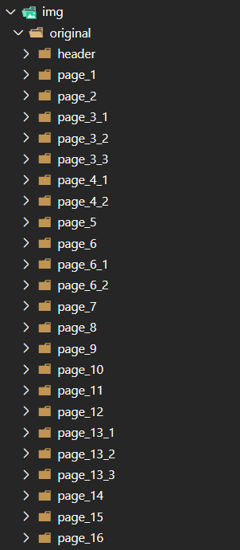
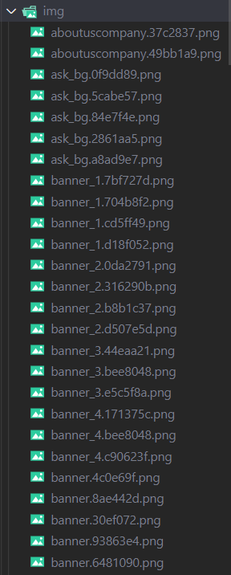
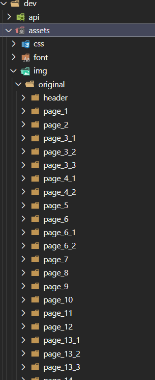
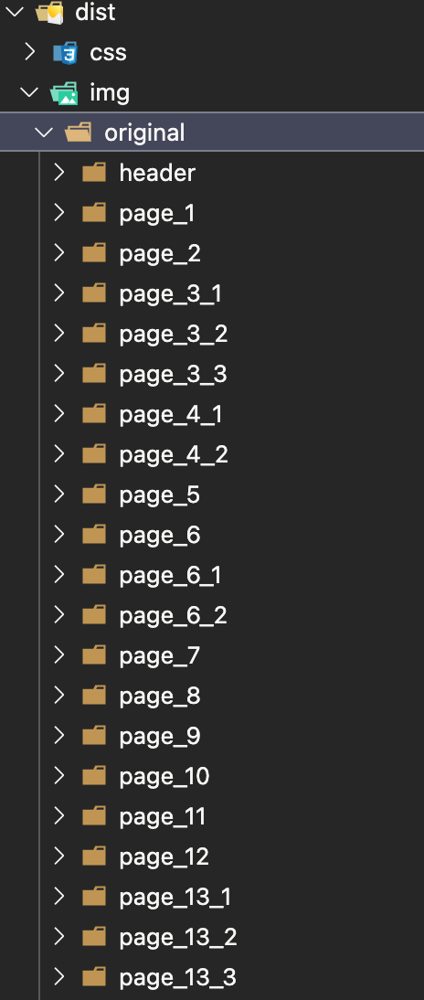

场景
有时我们在开发模式时，会在img文件里建很多的不同的文件夹，方便我们开发过程中更好的管理，就像这样：

我们把一些场景的资源用不同的文件存放，这样在我们开发的过程中，可以更快更有效地管理我们场景的资源，尤其是在做游戏项目。
当我们项目开发完了，打包时，webpack内部会将我们应用的图片资源，全部打包到一文件夹中，就像下面这样：

但是如果遇到项目上线了，只是紧急替换图片，不需要改逻辑，又或者有些奇葩客户，说打包出来图片文件不要混在一起，要分开，这样方便他们自己修改别的版本（我就遇到过），这就很尴尬了，光是找替换的文件都要找半天，所以这时如果我们在打包的时候，保留了原本img里面的文件夹，那就很舒服
实现
webpack🐂🍺的地方不需要再说啦，现在说下怎么实现在打包的时候，保留img文件夹里面的文件夹，其实也不是很难
webpack配置：
// webpack.config.js
{
test: /\.(png|jpg|jpeg|gif)$/,
use: [
{
loader: 'url-loader',
options: {
//利用[path]路径获取文件夹名称并设置文件名
name: '[path]/[name].[ext]',
limit: 1,
//过滤掉[path]的相对路径
context: path.resolve(__dirname, '../dev/assets'),
}
}
]
},
我的开发目录结构： 
打包以后的目录： 
这样做可以过滤掉开发目录前面的路径：
context: path.resolve(__dirname, '../dev/assets')
如果为了防止缓存，还可以在打包出来的图片文件加上hash：
name: '[path]/[name]-[hash:8].[ext]',